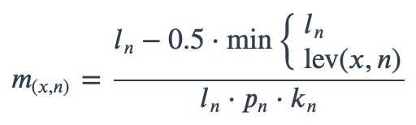

This algorithm is used by as.mo() and all the mo_* functions to determine the most probable match of taxonomic records based on user input.
mo_matching_score(x, n)
Arguments
| x | Any user input value(s) |
|---|---|
| n | A full taxonomic name, that exists in |
Matching Score for Microorganisms
With ambiguous user input in as.mo() and all the mo_* functions, the returned results are chosen based on their matching score using mo_matching_score(). This matching score \(m\), is calculated as:

where:
x is the user input;
n is a taxonomic name (genus, species, and subspecies);
ln is the length of n;
lev is the Levenshtein distance function, which counts any insertion, deletion and substitution as 1 that is needed to change x into n;
pn is the human pathogenic prevalence group of n, as described below;
kn is the taxonomic kingdom of n, set as Bacteria = 1, Fungi = 2, Protozoa = 3, Archaea = 4, others = 5.
The grouping into human pathogenic prevalence (\(p\)) is based on experience from several microbiological laboratories in the Netherlands in conjunction with international reports on pathogen prevalence. Group 1 (most prevalent microorganisms) consists of all microorganisms where the taxonomic class is Gammaproteobacteria or where the taxonomic genus is Enterococcus, Staphylococcus or Streptococcus. This group consequently contains all common Gram-negative bacteria, such as Pseudomonas and Legionella and all species within the order Enterobacterales. Group 2 consists of all microorganisms where the taxonomic phylum is Proteobacteria, Firmicutes, Actinobacteria or Sarcomastigophora, or where the taxonomic genus is Absidia, Acremonium, Actinotignum, Alternaria, Anaerosalibacter, Apophysomyces, Arachnia, Aspergillus, Aureobacterium, Aureobasidium, Bacteroides, Basidiobolus, Beauveria, Blastocystis, Branhamella, Calymmatobacterium, Candida, Capnocytophaga, Catabacter, Chaetomium, Chryseobacterium, Chryseomonas, Chrysonilia, Cladophialophora, Cladosporium, Conidiobolus, Cryptococcus, Curvularia, Exophiala, Exserohilum, Flavobacterium, Fonsecaea, Fusarium, Fusobacterium, Hendersonula, Hypomyces, Koserella, Lelliottia, Leptosphaeria, Leptotrichia, Malassezia, Malbranchea, Mortierella, Mucor, Mycocentrospora, Mycoplasma, Nectria, Ochroconis, Oidiodendron, Phoma, Piedraia, Pithomyces, Pityrosporum, Prevotella, Pseudallescheria, Rhizomucor, Rhizopus, Rhodotorula, Scolecobasidium, Scopulariopsis, Scytalidium, Sporobolomyces, Stachybotrys, Stomatococcus, Treponema, Trichoderma, Trichophyton, Trichosporon, Tritirachium or Ureaplasma. Group 3 consists of all other microorganisms.
All matches are sorted descending on their matching score and for all user input values, the top match will be returned. This will lead to the effect that e.g., "E. coli" will return the microbial ID of Escherichia coli (\(m = 0.688\), a highly prevalent microorganism found in humans) and not Entamoeba coli (\(m = 0.079\), a less prevalent microorganism in humans), although the latter would alphabetically come first.
Stable Lifecycle

The lifecycle of this function is stable. In a stable function, major changes are unlikely. This means that the unlying code will generally evolve by adding new arguments; removing arguments or changing the meaning of existing arguments will be avoided.
If the unlying code needs breaking changes, they will occur gradually. For example, a argument will be deprecated and first continue to work, but will emit an message informing you of the change. Next, typically after at least one newly released version on CRAN, the message will be transformed to an error.
Reference Data Publicly Available
All reference data sets (about microorganisms, antibiotics, R/SI interpretation, EUCAST rules, etc.) in this AMR package are publicly and freely available. We continually export our data sets to formats for use in R, SPSS, SAS, Stata and Excel. We also supply flat files that are machine-readable and suitable for input in any software program, such as laboratory information systems. Please find all download links on our website, which is automatically updated with every code change.
Read more on Our Website!
On our website https://msberends.github.io/AMR/ you can find a comprehensive tutorial about how to conduct AMR data analysis, the complete documentation of all functions and an example analysis using WHONET data.
Author
Matthijs S. Berends
Examples
as.mo("E. coli") mo_uncertainties() mo_matching_score(x = "E. coli", n = c("Escherichia coli", "Entamoeba coli"))